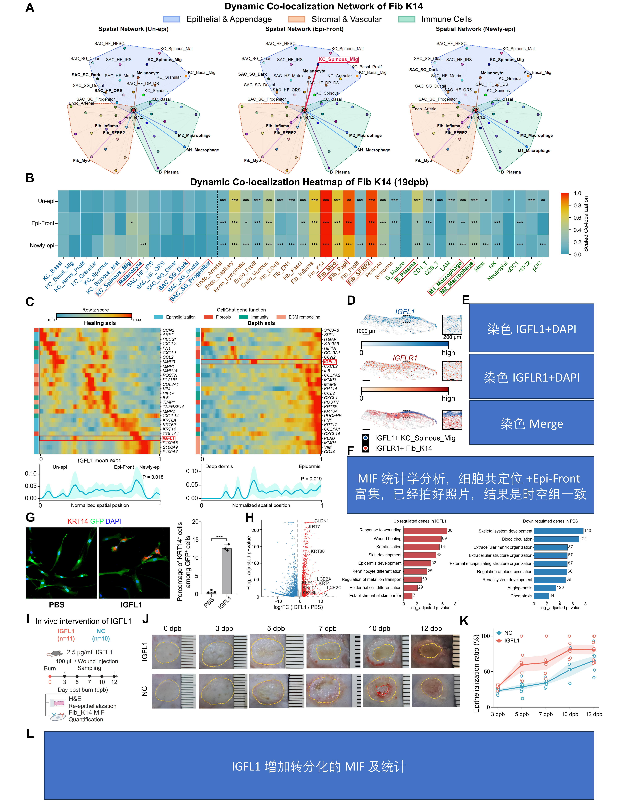

Local signaling candidates, fibroblast perturbation, bulk expression responses and wound-repair observations.
Executed supporting analyses and/or archived sources; see panel-specific status
Source data · Panel manifest · Execution report

| Panel | Description | Status |
|---|---|---|
| 6A | (A) Fib_K14-centered co-localization networks in unepithelialized, front, and newly epithelialized regions. Shaded groups distinguish epithelial/appendage, stromal/vascular, and immune states. | not_run |
| 6B | (B) Scaled co-localization heatmap for Fib_K14 and the indicated cell states at 19 dpb, stratified by region. | not_run |
| 6C | (C) Spatial signaling-associated gene profiles along healing and depth axes, with functional annotations labeled CellChat gene function. Heatmaps show row z scores; IGFL1 is highlighted. Lower plots show mean-expression profiles with displayed P = 0.018 and P = 0.019, respectively. | not_run |
| 6D | (D) IGFL1 and IGFLR1 spatial-expression maps and locations labeled as IGFL1-positive KC_Spinous_Mig and IGFLR1-positive Fib_K14. Overview scale bars, 1,000 μm; inset scale bars, 200 μm. | not_run |
| 6E | (E) Immunofluorescence validation of IGFL1 and IGFLR1 protein localization in wounded skin, shown in the individual IGFL1/DAPI and IGFLR1/DAPI channels and merged images. The wound-front localization is consistent with the complementary spatial expression patterns predicted by the transcriptomic analysis. | partial |
| 6F | (F) Quantification of multiplex-imaging measurements validating the enrichment and spatial association of IGFL1- and IGFLR1-associated signals at the epithelialization front. These findings are consistent with the wound-front organization predicted by the spatial analyses. | partial |
| 6G | (G) KRT14 (red), GFP (green), and DAPI (blue) imaging after PBS or IGFL1 treatment, with the KRT14-positive fraction among GFP-positive cells. | not_run |
| 6H | (H) Bulk RNA-seq comparison of IGFL1 versus PBS, showing log2 fold change and −log10 adjusted P value, followed by GO analyses of selected gene sets. The original enrichment panel includes epithelial-differentiation and barrier-associated terms. | partial |
| 6I | (I) In vivo IGFL1 design. The schematic lists IGFL1 n = 11 and negative control (NC) n = 10, with 100 μL of 2.5 μg/mL IGFL1 per wound and sampling at 3, 5, 7, 10, and 12 dpb. | not_run |
| 6J | (J) Representative gross wound photographs at 0, 3, 5, 7, 10, and 12 dpb after IGFL1 or control treatment. Group-matched H&E sections from the separate histology series are presented in Figure S7B. | not_run |
| 6K | (K) H&E re-epithelialization in the current IGFL1 collection. Points, sections; lines, means; shading, mean ± SEM. IGFL1/control section counts are 7/6, 6/7, 5/6, 5/5, and 7/7 at 3, 5, 7, 10, and 12 dpb. Mean treatment/control values at days 5, 7, 10, and 12 are 59.83/28.59%, 62.78/34.24%, 81.00/52.76%, and 80.66/65.66%. Exploratory two-sided Welch tests with five-time-point Holm adjustment yield no adjusted P < 0.05. | partial |
| 6L | (L) In vivo quantification of epithelial-marker-positive fibroblast-associated cells in IGFL1-treated and control wounds. IGFL1 treatment increased this population, consistent with the predicted promotion of the Fib_K14 epithelial program. | partial |
The final Figure 6E/F/L source tables/artwork remain pending. Primary PyDESeq2 figure statistics and complementary R DESeq2/edgeR results retain their separate parameter sets.